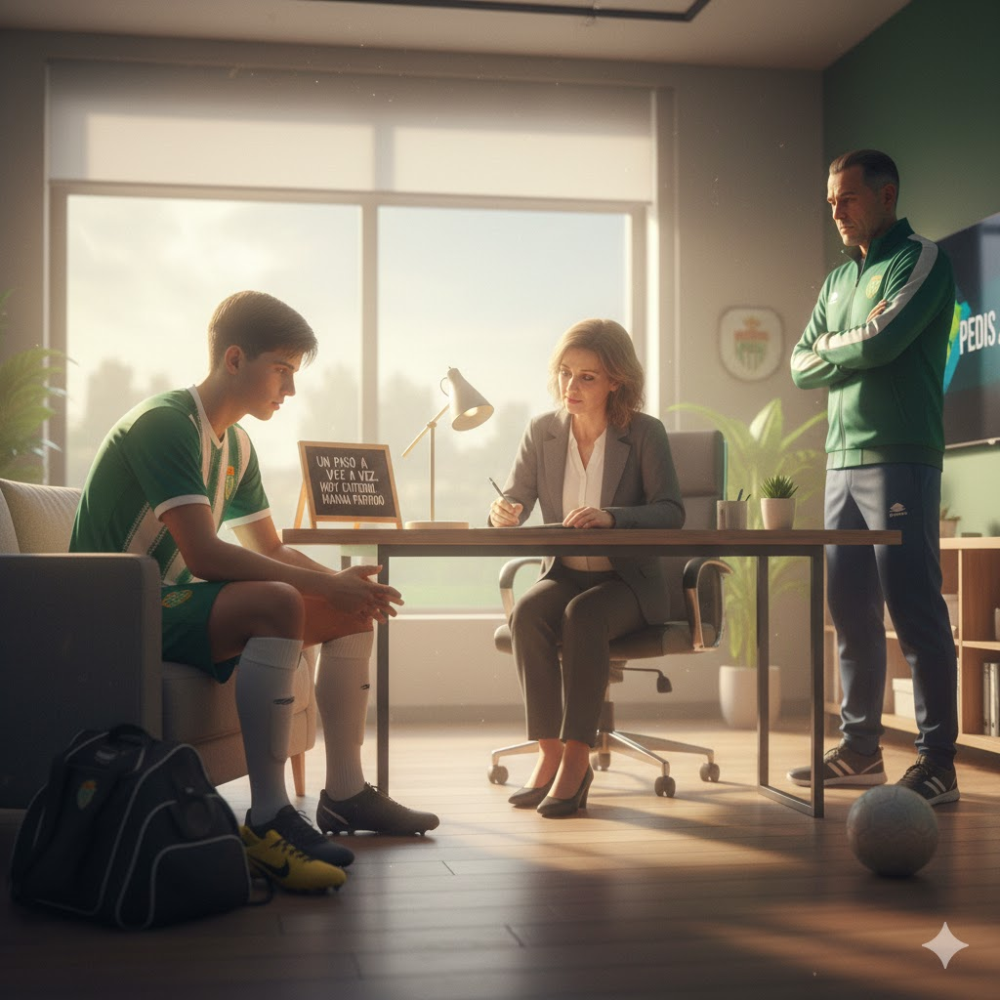

Hablás con el staff del club y te ayudan a ordenar tu mente y poner todas las cosas donde deben de estar. Te dicen: "un paso a la vez, hoy entreno, mañana partido."
Vos te sentís mejor y volvés a lo tuyo: jugar. Fuchibol puro.
Se viene un partido clave: el que gane sube de nivel.
Me pongo líder: juego con huevos y saco el partido